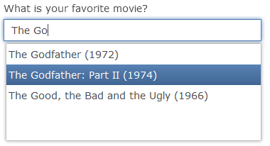

The RAP default theme is now an equitable theme, and it is no longer used as a fallback for custom themes. Instead of the default theme, all theming properties now have a default value which is used as a fallback in case the theme does not define a value for this property.
Unlike the RAP default theme, these fallback values will not change. They are chosen to be plain values without any effects, i.e. no gradients, rounded borders, or shadows, just plain black-and-white. With this change, custom themes will be more stable. Changes to the RAP default theme will not affect custom themes anymore.
The default values are still defined in the respective
<Widget>.default.css files, and the RAP default theme is now contained
in a file of its own.
For details, see
bug 363736.
The RWT.ACTIVE_KEYS constant has been
introduced in RAP 1.4
to allow for key bindings.
Now this constant can also be used to limit the keys that will trigger a key event on a
single widget.
This means that when a key-listener is attached to a widget,
it's now possible to choose beforehand which keys will trigger events.
This can drastically reduce the traffic caused by key-events.
For more details, see the JavaDoc on RWT.ACTIVE_KEYS.
The new constant RWT.CANCEL_KEYS can be used to specify a
list of keys to be cancelled.
Instead of dynamically cancelling events by setting the doit-flag to
false in a KeyListener, this allows to do the same thing in a
static way.
When CANCEL_KEYS are defined, this will suppress the default operation associated with these
keys, e.g. changing focus on TAB or closing a popup with ESC.
Note that some browser shortcuts can not be suppressed, like changing the browser tab with
CTRL+TAB.
Like RWT.ACTIVE_KEYS, this can be done either globally, using
Display.setData(), or on a
per-widget base
using Widget.setData().
For more details, see the JavaDoc on RWT.CANCEL_KEYS.
We decided to replace the support for dynamically vetoing key and traverse events
in favor of the static approach described above.
With this change, setting the doit-flag on KeyEvents and
TraverseEvents has
no longer any effect
in RAP.
As a replacement, the RWT.CANCEL_KEYS constant should be used.
JFace cell editors have already been adapted to this change.
We've introduced KeyEvents and TraverseEvents in RAP 1.2 to be
able to support JFace cell editors.
There were multiple issues remaining that we could never overcome,
such as synchronous HTTP requests not working correctly in some browsers,
or security-restrictions for certain keys for in others.
Over time, we've realized that dynamically preventable key and traverse events are not
going to work fully and reliably in all browser.
We dislike taking functionality away, but in this case we are convinced that the improvements are more valuable than the loss. We were able to heavily improve the key event handling and to fix several issues regarding missing events or wrong values. The change also allowed us to send key events in asynchronous HTTP requests in all browsers, making the client UI more responsive.
The key event fixes mentioned above also allowed us to repair our
ContentProposalAdapter implementation.
Now we can provide a fully functional content proposal that can be operated completely by
the keyboard on all browsers.
Combined with the RWT.ACTIVE_KEYS constant, the requests can be limited to
those needed for opening the content proposal.
